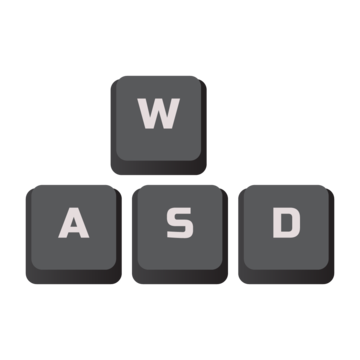
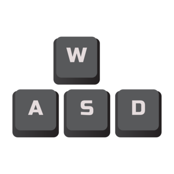
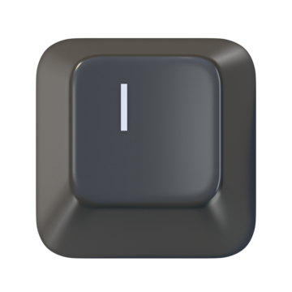
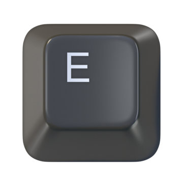
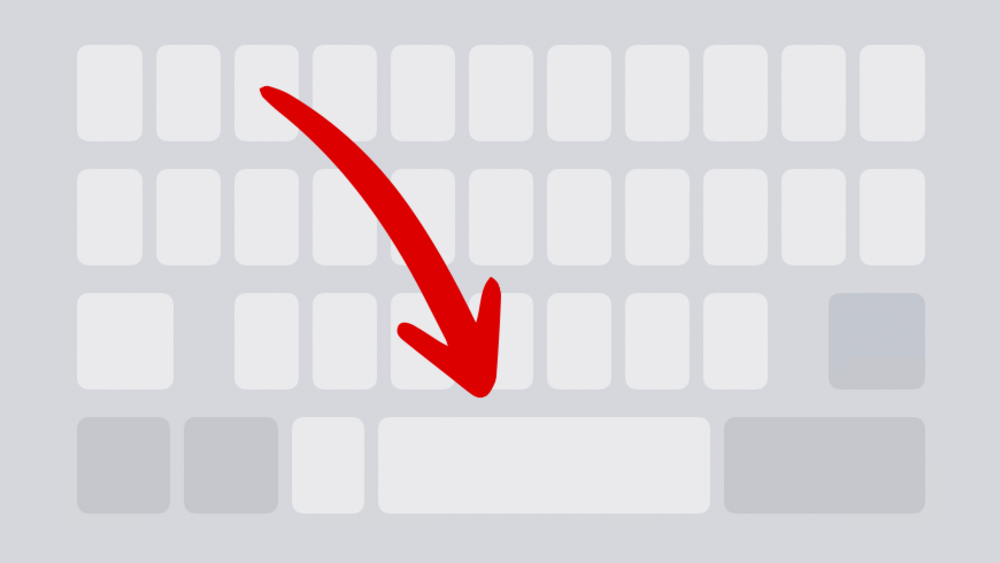

Para andar, você pode usar as setinhas ou as teclas WASD.

Para abrir o inventário, aperte a tecla I.


Para interagir com o personagem, aperte a tecla E.
Para passar para a próxima fala, aperte a barra de espaço.